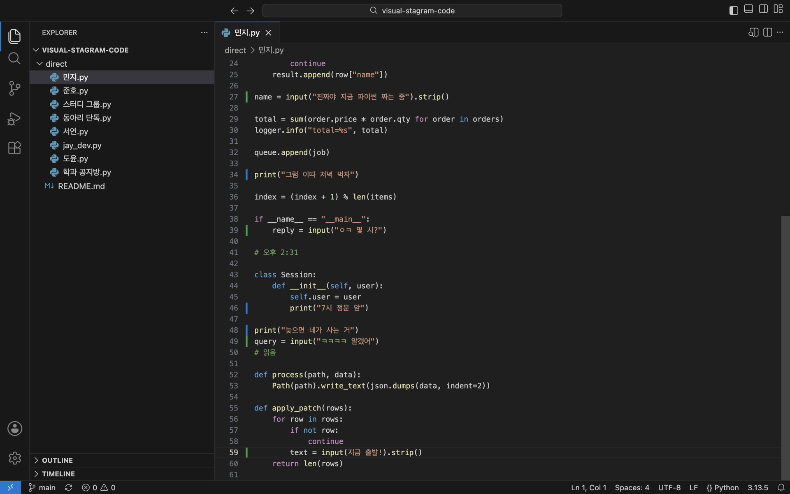

무료 · 오픈소스
VS Code처럼 보이는 인스타그램 DM 앱입니다. 대화방은 파이썬 파일이 되고, 메시지는 코드 한 줄이 됩니다.
macOS는 Apple Silicon(M1 이후), Windows는 64비트용입니다.
쓰던 VS Code 안에서 쓰려면 앱을 설치한 뒤 VS Code 확장(.vsix)을 추가하세요.

겉은 에디터, 속은 진짜 인스타그램입니다.
print("뭐해?") reply = input("코딩중")
받은 메시지는 print(), 내가 보낸 메시지는 input()으로 보입니다. 마지막 줄에 쓰고 Enter를 누르면 전송됩니다.
def on_message(event): print("이따 저녁 먹자")
메시지 주변에 함수와 반복문이 무작위로 섞여 진짜 작업 중인 파일처럼 보입니다. 내 메시지와 답장은 줄 옆의 색 막대로 구분됩니다.
direct/ 민지.py 스터디 그룹.py
탐색기의 파일 하나가 대화방 하나입니다. 쓰던 VS Code에 확장으로 넣으면 일하던 창 그대로 DM을 볼 수 있습니다.
print(open("photo.jpg")) # 1 attachment(s) ready
받은 사진과 GIF는 마우스를 올리면 미리보기로 뜹니다. 보낼 때는 붙여넣거나 끌어다 놓으면 됩니다.
# 비밀번호는 # instagram.com에만 입력
앱 안에서 실제 인스타그램 페이지가 돌아갑니다. 비밀번호를 앱이 저장하거나 다른 곳으로 보내지 않습니다.
개인이 만든 앱이라 처음 열 때 한 번 경고가 뜹니다.
.dmg 파일을 열고 앱을 Applications로 끌어다 놓습니다.Setup.exe 파일을 실행합니다.